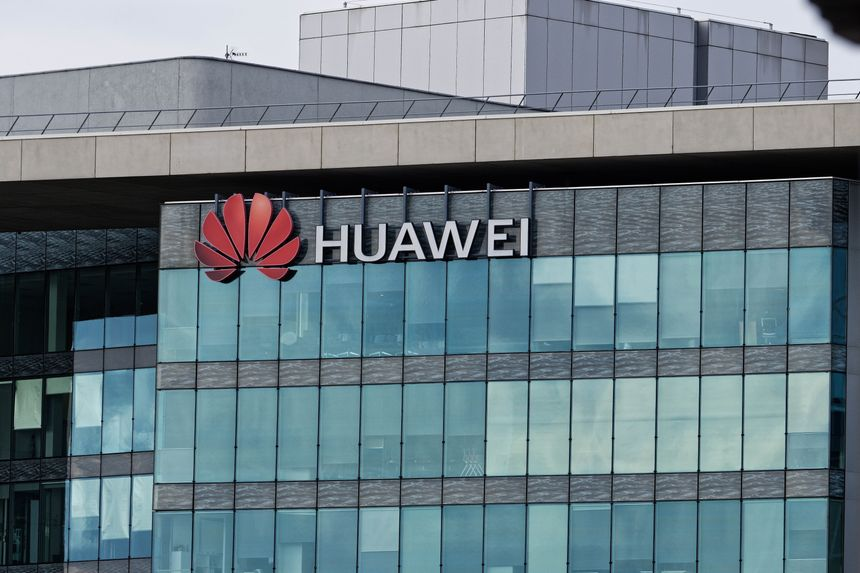
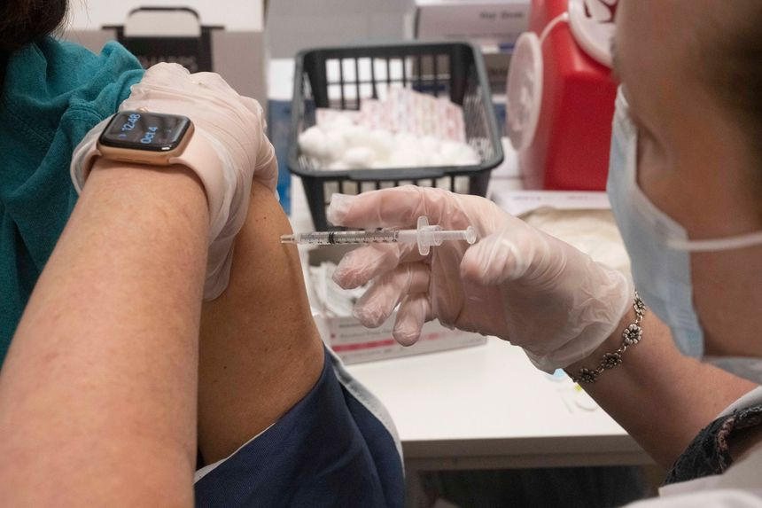
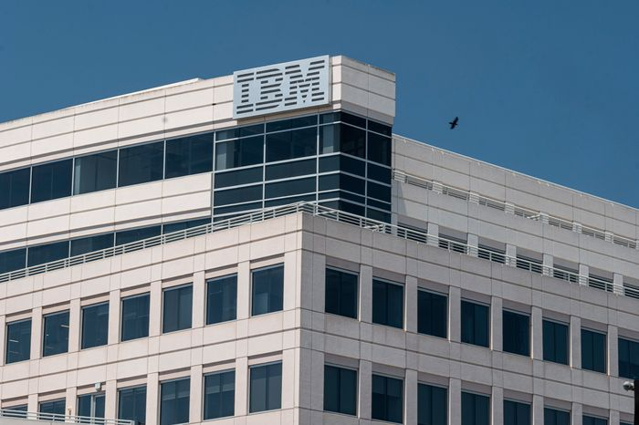
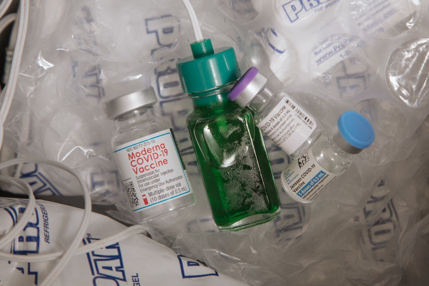
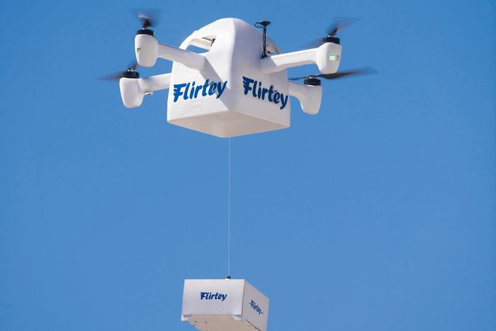
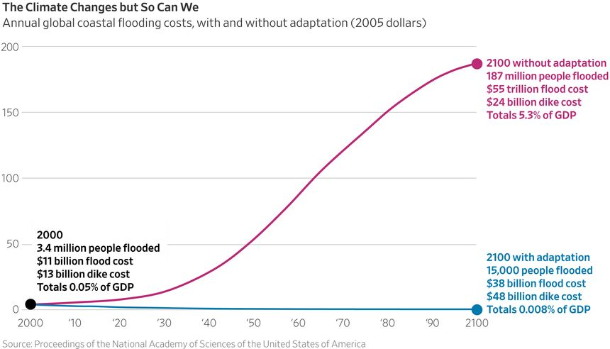

| 时间 | 分类 | 标题 | 副标题 | 正文 | 图片 |
|---|---|---|---|---|---|
| 2021-10-21 23:42:00 | World | Global Finance Watchdog Censures Turkey Over Money Laundering, Terrorist Financing | The Financial Action Task Force adds Turkey to its list of monitored countries, adding to economic turmoil | WASHINGTON—A global watchdog on Thursday added Turkey to its list of countries requiring special regulatory oversight for failing to stop money laundering and terrorist financing, a designation analysts say will rattle Anakara’s already shaky economy. The action means Turkey joins a group of 23 countries—including Zimbabwe, Haiti and Syria—that the Financial Action Task Force determined “have strategic deficiencies in their regimes to counter money laundering, terrorist financing, and proliferation financing.” |
|
| 2021-10-21 23:31:00 | Politics | Biden Signals Openness to Ending Filibuster on Some Issues | Asked during a town hall if he would consider a filibuster carve-out to advance voting legislation, the president said: ‘And maybe more’ | WASHINGTON—President Biden signaled he is open to doing away with the filibuster to pass legislation to overhaul election rules nationwide and may be amenable to eliminating the 60-vote threshold for other bills as well. Asked if he would consider establishing a filibuster carve-out to advance voting legislation, Mr. Biden said during a CNN town hall on Thursday night: “And maybe more.” |
|
| 2021-10-21 22:30:00 | Politics | U.S. Issues $100 Billion in Export Licenses to Suppliers of Huawei, SMIC | Commerce Department data shows that suppliers of the blacklisted Chinese tech companies maintained access to U.S. products including semiconductors | The U.S. Commerce Department issued more than $100 billion worth of export licenses for semiconductors and other products to suppliers of Huawei Technologies Co. and another blacklisted Chinese tech company, as a global chip shortage started to bite. The Commerce data, released Thursday by a Republican member of Congress, shows the department granted 113 export licenses worth about $61 billion for suppliers of telecom giant Huawei and 188 licenses valued at $42 billion for suppliers of Semiconductor Manufacturing International Corp., China’s largest chip maker, from Nov. 9, 2020, through April 20 this year. |
 |
| 2021-10-21 21:30:00 | Politics | Biden Could Use National Guard to Help With Supply Chain Bottlenecks | President says he will consider such a deployment if logistics problems persist | WASHINGTON—President Biden said he would consider deploying the National Guard to assist with supply-chain bottlenecks that have led to shortages and higher consumer costs, if his administration is unable to ease the problem. “The answer is yes, if we can’t move—increase the number of truckers, which we’re in the process of doing,” Mr. Biden said during a CNN town hall on Thursday when asked about deploying the National Guard. |
|
| 2021-10-21 19:31:00 | Business | American, Southwest Say Vaccine Mandate Won’t Disrupt Flights | Some aviation unions have pushed back against the requirement, raising the possibility of service problems during the holiday season | Airlines say they don’t anticipate having to immediately fire employees not vaccinated by a federal deadline in December, another challenge for carriers managing travel’s rocky recovery from the coronavirus pandemic. Major airlines, which conduct business with the federal government, must require their workers to be vaccinated by Dec. 8 under an executive order signed by President Joe Biden in September pertaining to federal contractors. |
|
| 2021-10-21 18:59:00 | Markets | Snap Can Win Social Media’s Squid Game | While the company’s results might have disappointed investors, its platform could still prove a comparative winner amid a challenging backdrop | Viewers of Netflix’s latest and greatest hit know there is no such thing as easy money when the stakes are high, no matter how basic the game. Social-media investors are learning the same lesson. Shares of Snapchat owner Snap Inc. lost almost a quarter of their value Thursday evening after it reported results. Making money in the stock had seemed like child’s play. If you bought Snap back in mid-March of last year, you had yourself a “nine bagger,” with shares up more than 890% in around 18 months. Over the last two years, Snap has dominated even its high-performing social-media peers. |
|
| 2021-10-21 18:43:00 | Opinion | North Carolina Republicans Go Wobbly on Medicaid Expansion | Hungry for a budget deal, GOP lawmakers look set to drop a decade of opposition to one of ObamaCare’s worst features. | ||
| 2021-10-21 18:42:00 | Opinion | The $10,000 IRS Tax Dragnet | Treasury wants to snoop on bank accounts to trigger more audits. | Democrats walked into a political ditch with their plan to let the Internal Revenue Service snoop on American banks accounts, and so far they’re doing a lousy job of scrambling to get out. This week Senate Democrats backed by the Biden Treasury released a revised proposal that raises the threshold for financial institutions to report to the IRS on individual accounts to $10,000 from the previously mooted $600. The proposal also tries to dodge the charge of snooping on Everyman by exempting wage income from “certain payroll companies” and Social Security checks. |
|
| 2021-10-21 18:42:00 | Business | Chipotle’s Profit More Than Doubles as Chain’s Burritos Get Pricier | Sales set quarterly record after company raises menu prices to offset higher meat, freight costs | ||
| 2021-10-21 18:40:00 | Opinion | Merrick Garland Gets Schooled | A father was angry after his daughter was assaulted in school. That’s not terrorism. | ||
| 2021-10-21 18:39:00 | Tech | Adam Neumann Resurfaces to Celebrate WeWork’s Public Listing | Ousted former CEO still controls 11% of the company’s shares after exit package | As WeWork Inc. made its debut Thursday morning on the New York Stock Exchange, the shared office space company’s high-profile co-founder and former chief executive wasn’t on stage ringing the exchange’s opening bell. Instead, Adam Neumann was two and a half miles to the north, celebrating with dozens of former employees and his co-founder, Miguel McKelvey, at The Standard hotel in Manhattan’s Meatpacking District. |
|
| 2021-10-21 18:38:00 | U.S. | FBI Confirms Brian Laundrie’s Remains Found in Florida Nature Reserve | Gabby Petito’s fiancé was a person of interest in her murder case | Human remains found in a Florida nature reserve are those of Brian Laundrie, a person of interest in the death of his fiancée Gabby Petito, the Federal Bureau of Investigation said Thursday, after a weekslong manhunt that garnered national attention. Investigators earlier this week had found what appeared to be human remains and a backpack and notebook that belonged to Mr. Laundrie in the Carlton Reserve near Myakkahatchee Creek Environmental Park in North Port, Fla., Michael McPherson, special agent in charge of the FBI’s Tampa field office, said Wednesday. The area had been underwater until recently, Mr. McPherson said, making search efforts for the team more challenging. |
|
| 2021-10-21 18:36:00 | Opinion | Legal Gerrymander Flip-Flop | Democratic lawyers go to court to defend Oregon’s partisan map. | ||
| 2021-10-21 18:34:00 | Opinion | Yellen’s Global Tax Railroad | She wants to use an OECD pact to coerce Congress to go along. | ||
| 2021-10-21 18:29:00 | Opinion | The Distracted Defense Department | The military should focus on strategic adversaries, not challenges like Covid and climate change. |  |
|
| 2021-10-21 18:28:00 | Opinion | The Monetary Bathtub Is Overflowing | Many economists say inflation is transitory. It will be persistent. | ||
| 2021-10-21 18:27:00 | Opinion | Are Internet Services as Good as Church? | They open the door to more congregants but provide an attenuated worship experience. | ||
| 2021-10-21 18:26:00 | Opinion | Opportunity Knocked. They Didn’t Answer | The stories of ‘The Chocolate Soldier’ and the Superball. | ||
| 2021-10-21 18:25:00 | Books & Arts | ‘A Dog’s World’ Review: When the Pug Joins the Pack | In a post-human world, dogs might thrive without many of the traits that make them such appealing pets. |  |
|
| 2021-10-21 18:20:00 | Markets | Western Digital-Kioxia Deal Talks Stall | Steady drop in Western Digital’s share price was a factor that cooled merger discussions | Western Digital Corp.’s talks to merge with Japanese chip maker Kioxia Holdings Corp. in a $20 billion-plus deal have stalled, according to people familiar with the matter. The companies, which had been speaking since early this year, were working to finalize a stock deal that would have created a memory-chip powerhouse worth something on the order of $40 billion, The Wall Street Journal reported in August. Though the talks are on hold now, they could still be revived, some of the people said. |
|
| 2021-10-21 17:51:00 | Markets | DWAC, the Trump Social-Media SPAC, Quadruples | Frenzied buying is similar to gains in special-purpose acquisition companies earlier this year | ||
| 2021-10-21 17:48:00 | Politics | CDC Advisers Back Moderna, J&J Covid-19 Booster Shots | Panel also supports mixing-and-matching approach; now it is up to the CDC director to sign off on the extra doses | ||
| 2021-10-21 17:39:00 | Economy | Fed Imposes New Restrictions on Officials’ Investment Activities | Rules prohibiting trading of individual stocks and bonds, when officials can buy diversified securities follow revelations of active trading last year as the Fed responded to Covid-19 | Federal Reserve Chairman Jerome Powell imposed sweeping personal-investing restrictions on senior officials in a bid to address a stock-trading controversy that prompted the resignation of two reserve bank presidents and hurt his prospects of being reappointed to lead the central bank next year. The Fed on Thursday said the new rules will restrict senior officials’ trading to broad-based investment vehicles such as mutual funds. They also will require any trades to be preapproved and pre-scheduled, removing the potential for any appearance that officials were benefiting from inside information to bolster their personal investments. |
|
| 2021-10-21 17:31:00 | World | European Leaders Urge Caution in EU Clash With Poland | Germany, France and others fear fast action against Warsaw could backfire and hurt the bloc even more | European Union leaders urged Brussels to act cautiously in an escalating fight with Poland’s nationalist government over its judiciary as the bloc’s heads of government gathered Thursday for a summit. The latest fight centers on a ruling by Poland’s constitutional tribunal two weeks ago that EU treaty law has become incompatible with Polish law—an unprecedented ruling from a national court. The ruling was delivered in response to a legal question posed by Polish Prime Minister Mateusz Morawiecki. |
|
| 2021-10-21 17:28:00 | Pro Bankruptcy Distress | Mexican Steelmaker Altos Hornos Explores U.S. Bankruptcy Filing | Steel conglomerate considers chapter 11 filing after years of losses and chairman’s Pemex bribery settlement | Mexican steelmaker Altos Hornos de Mexico SAB de CV said Thursday that it is exploring a bankruptcy filing for a subsidiary that does business in the U.S. The chapter 11 filing for the subsidiary, Minera del Norte SA, might provide a venue for the parent company to dispute an agreement by AHMSA’s chairman to have his company pay Mexico’s state-owned oil company to settle corruption claims against him, according to people familiar with the matter. |
|
| 2021-10-21 17:21:00 | Books & Arts | ‘Invasion’ Review: It Came From Outer Space...Eventually | Extraterrestrials wreak havoc on Earth in a new Apple TV+ show, but with many characters and a dragging storyline it creeps rather than thrills. | ||
| 2021-10-21 17:20:00 | Books & Arts | ‘The French Dispatch’ Review: Not Worth a Detour | In Wes Anderson’s latest, an offbeat homage to the New Yorker, humor is scarce and boredom abounds. | ||
| 2021-10-21 17:19:00 | Opinion | ‘Thoughts of a Colored Man’ Review: In Need of a Shape-Up | Keenan Scott II’s ambitious new play with songs and slam poetry, set in and around a barbershop in a gentrifying Brooklyn neighborhood, has some striking characters but doesn’t hold together | ||
| 2021-10-21 17:15:00 | Markets | PayPal Stock Falls After News of Pinterest Talks | Shares fell 5.9% Thursday on top of a 4.9% drop on Wednesday | ||
| 2021-10-21 16:50:00 | Tech | Snap’s Stock Plummets as It Blames Apple’s Privacy Changes for Hurting Its Ad Business | Social-media company posted revenue and user growth in latest quarter but expects growth to slow | ||
| 2021-10-21 16:43:00 | Politics | Democrats Weigh Tax Alternatives to Fund $2 Trillion Package | Sen. Kyrsten Sinema objected to any increases in top marginal rates on corporations, individuals or capital gains | ||
| 2021-10-21 16:30:00 | U.S. | Trial of Rudy Giuliani Associate Lev Parnas Comes to a Close | Prosecutors, defense lawyers sparred over whether he made illegal political donations, helped funnel foreign money into U.S. elections | The criminal trial of former Rudy Giuliani associate Lev Parnas drew to a close Thursday as federal prosecutors and defense attorneys sparred over whether he made illegal political donations and helped funnel foreign money into U.S. elections in 2018. Mr. Parnas, who became a key figure in the first impeachment of former President Donald Trump, faces six counts of campaign-finance charges, including for conspiring to make more than $25,000 in political contributions in a calendar year with funds from a wealthy Russian businessman, Andrey Muraviev. |
|
| 2021-10-21 16:24:00 | Tech | Pinterest’s Marketing Allure Drives Suitors’ Interest | PayPal wants to buy the social-media platform, which offers a coveted female user base and a focus on spurring e-commerce sales | ||
| 2021-10-21 16:22:00 | Opinion | Now Look Who’s Calling for Family Leave Subsidies | Maybe Democrats really do have a marketing problem. | ||
| 2021-10-21 16:18:00 | World | Haiti Gang That Kidnapped U.S. Missionaries Threatens to Kill Them | 400 Mawozo gang leader in video threatens to kill kidnapped missionaries if ransom isn’t paid | The head of a Haitian gang holding 17 American and Canadian missionaries captive has threatened to kill them if a ransom isn’t paid, according to a video. “I swear that if I don’t get what I want, I prefer to kill the Americans. I’ll put a bullet in each of their heads,” said Wilson Joseph, believed by Haitian officials to be the head of the 400 Mawozo gang that carried out the brazen mass kidnapping of 16 Americans and one Canadian. |
|
| 2021-10-21 15:53:00 | Economy | U.S. Home Sales Jumped 7% in September | Increase in existing-home sales last month followed late-summer drop in mortgage rates | U.S. home sales surged in September with their strongest showing since January, ending a monthslong stretch when housing market activity slowed from its frenzied pace and high prices crowded out many buyers. A late-summer dip in mortgage rates and the continued hunt for more space to work at home spurred an uptick in demand, housing analysts said. Sales were especially robust at the high end, aided by a booming stock market. |
|
| 2021-10-21 15:53:00 | Life & Work | For a Better Brownie Recipe, Just Add Eggplant | Vegetables bring beautiful color, flavor and, above all, moisture to everything from cupcakes to flan. Hit the savory side of the produce aisle to make these delicious desserts. | ||
| 2021-10-21 15:21:00 | Politics | Merrick Garland Defends School Board Memo From Republican Criticism | Republicans accuse Justice Department of trying to silence parents after memo directs FBI to help address rise in violent threats to educators | ||
| 2021-10-21 15:15:00 | Markets | Blackstone Can Deal With Rising Rates | Alternative asset managers’ upswing could continue even if low rates and surging market values don’t | ||
| 2021-10-21 14:51:00 | Life & Work | 2022 Hyundai Santa Cruz: A Pickup Built Like a Crossover | Billed as a Sport Adventure Vehicle and combining an open cargo bed with a comfortable interior, the Santa Cruz is an affordable, versatile, smaller alternative to a standard midsize pickup. And Dan Neil thinks it’s rad. | ||
| 2021-10-21 14:35:00 | Politics | Why Ex-Trump Aide Steve Bannon Is Back in the Spotlight | Longtime GOP operative remains an ally of the former president despite having been ousted from the White House staff in 2017 | ||
| 2021-10-21 14:02:00 | Opinion | Diversity and Exclusion in U.S. Art Museums | Can you only understand what I am saying if you are the same race, gender and class as me? | ||
| 2021-10-21 14:01:00 | Opinion | The Segregationist History of School Choice | The purpose of Virginia’s voucher program was to defend segregation. | ||
| 2021-10-21 13:59:00 | Opinion | What Can Biden Get Away With Before Courts Step In? | Being an environmentalist once implied an appropriate humility in our relationship with the rest of creation. |  |
|
| 2021-10-21 13:31:00 | Life & Work | This Is the Best Way to Visit Yellowstone National Park | Yellowstone is having the busiest year in its history. To steer clear of the crowds and see the real treasures of the park, grab a kayak and a guide. | OUR KAYAKS slid through the water, each splash from our paddles dappling light on the sand visible below. Before heading out for a remote lakeside camp deep in Yellowstone National Park, my three friends and I had packed the boats with tents, sleeping bags and three days worth of food. Compared with struggling along under the weight of a backpack, it was a delightfully effortless way to haul our stuff. The scenery we glided by could have been any pretty mountain lake, save for the grizzly bear, elk and mule deer tracks imprinted in the volcanic sand beaches and the white steamy wisps that rose from an unseen hydrothermal hot pot. |
|
| 2021-10-21 13:31:00 | Markets | Wireless Carriers Are Winning 5G Customers for the Wrong Reason | AT&T and Verizon’s heavy promotions lead to booming growth, but value of next-gen networks to users still unclear | ||
| 2021-10-21 13:26:00 | Risk & Compliance Journal | CFTC Issues Its Largest Whistleblower Award, of Nearly $200 Million | The regulator initially denied the whistleblower’s application for an award | ||
| 2021-10-21 13:23:00 | World | India Hits One Billion Covid-19 Vaccines Administered | The government celebrated the milestone following struggles with the inoculation effort earlier this year | NEW DELHI—India said it had administered one billion Covid-19 vaccines, hitting a milestone in a once-faltering campaign and signaling that the country could begin allowing more vaccine exports soon. While India has still only given two doses to about 31% of the adult population, the government celebrated the achievement Thursday. The country of more than 1.3 billion, which has been devastated by the pandemic, is second only to China in the total number of doses administered. |
|
| 2021-10-21 13:18:00 | Markets | America’s Housing Boom Will Keep Builders and Agents Busy | There is no more off season any more for housing as builders and buyers make up for lost time | Get ready for some rosy home-sales numbers, and get used to the idea that it still won’t be enough. Until America has more homes available for sale, the housing market will look unusually strong in what used to be the slow part of the year without satisfying pent-up demand that has been years in the making. The National Association of Realtors on Thursday reported that 6.29 million existing, or previously owned, homes were sold in September, at a seasonally adjusted annual rate. That was up from August’s 5.88 million. It counted as the best month since January, when an annualized 6.66 million homes were sold. |
|
| 2021-10-21 13:15:00 | Markets | Bitcoin Is Back Near Record Highs, and a Houston Pension Plan Dives In | Fund for the city’s firefighters buys $25 million of the cryptocurrencies bitcoin and ether, as digital assets attract institutional investors | ||
| 2021-10-21 12:36:00 | Opinion | History Is on the Ballot In Virginia | Critical Race Theory presents a story of the U.S. much like the one I learned growing up in Canada. | ||
| 2021-10-21 12:30:00 | Life & Work | How This Easy Chicken Kiev Recipe Gets Its Impossibly Crisp Crust | The secret: instant mashed potato flakes. As the chicken Kiev fries, the breading puffs and crisps while the herb-butter center goes molten. A mustardy potato salad provides a nice, sharp counterpoint. | ||
| 2021-10-21 12:01:00 | Life & Work | What to Know About Renting a Car This Holiday Season | With rental inventories low, it makes sense to cast a wide net and book early to find good deals | Americans who plan to rent cars for holiday travel this year should book soon, or risk facing scarce options and high prices. Rental-car companies sold off their fleets earlier in the Covid-19 pandemic. They have since struggled to replace their inventories because of the global computer-chip shortage. |
|
| 2021-10-21 11:51:00 | CMO Today | IPG Raises Organic Growth Expectations as Pandemic Impacts Improve | Ad holding company Interpublic Group of Cos. saw organic growth of 15% in the third quarter |  |
|
| 2021-10-21 11:49:00 | Politics | U.S. Intelligence Report Sounds New Climate Warning | National intelligence assessment cites likely cost disputes, Arctic conflict, drought and migration as temperatures rise | ||
| 2021-10-21 11:28:00 | Life & Work | An Insider’s Travel Guide to Philadelphia—Courtesy of an ‘It’s Always Sunny’ Star and Other Notable Locals | This historic heavyweight of a city is a booming cultural and culinary destination, too. To help you devise your own first-class field trip, we enlisted expert guidance. | ||
| 2021-10-21 10:33:00 | World | Xi Jinping Hasn’t Left China in 21 Months, Keeping Diplomacy Virtual | Chinese leader, his world travels interrupted by pandemic, is expected to remain a face on a screen at global summits | Chinese President Xi Jinping sealed himself behind some of the world’s tightest border controls when Covid-19 hit, and even as his international image sags he isn’t expected to resume his globe-trotting diplomacy soon. As many other heads of state have stepped out of their protective bubbles and begun hitting the road, China’s president has limited his interaction with foreign counterparts to videolink and telephone. |
|
| 2021-10-21 10:30:00 | CMO Today | VideoAmp Raises $275 Million as It Aims to Accelerate Growth | The latest round of funding, led by Spruce House Partnership, values VideoAmp at $1.4 billion, the company said | ||
| 2021-10-21 09:39:00 | World | U.K. Charges Ali Harbi Ali With Terrorist Murder of Lawmaker David Amess | Police will allege the murder had religious and ideological motivations | LONDON—British authorities Thursday charged a 25-year-old London man, Ali Harbi Ali, with murder and terrorism in the fatal stabbing of a Conservative lawmaker last week. British police said Mr. Ali will face trial after lawmaker David Amess was killed in the middle of the day while meeting constituents last Friday. |
 |
| 2021-10-21 09:39:00 | Business | Greyhound Swaps Hands Between European Companies | U.S. bus company is sold to German-owned intercity bus operator FlixMobility for $172 million | ||
| 2021-10-21 09:38:00 | Business | Pfizer-BioNTech Covid-19 Booster Shot Was 95.6% Effective in Large Trial, Companies Say | The results came from testing in people while the contagious Delta variant was prevalent |  | |
| 2021-10-21 09:37:00 | Markets | Tesla, Pinterest, IBM, Intel: What to Watch in the Stock Market Today | Shares of the SPAC that is merging with Donald Trump’s media company jumped; IBM posted revenue that missed forecasts |  | |
| 2021-10-21 09:35:00 | Life & Work | Is a Moderna, Pfizer or J&J Covid-19 Booster Shot Best for You? What to Know About Mixing Vaccines | You can get a different booster shot than the vaccine you originally received, the FDA says. Here’s what the science says about which combinations are strongest. |  | |
| 2021-10-21 09:25:00 | Tech | Facebook Is Rebuked by Oversight Board Over Transparency on Treatment of Prominent Users | Board set up by Facebook rebukes company after Wall Street Journal investigation into treatment of high-profile users | ||
| 2021-10-21 08:41:00 | Business | Southwest Airlines to Cut Flights Amid Staffing Shortages | Both Southwest and American Airlines report profits, helped by government aid | ||
| 2021-10-21 08:30:00 | Tech | Ransomware Gang Masquerades as Real Company to Recruit Tech Talent | Group linked to Colonial Pipeline hack has made offers to potential employees in new ransomware expansion push, researchers say | ||
| 2021-10-21 08:30:00 | World | NBA’s Enes Kanter Calls for a Free Tibet, Sparks Chinese Backlash | The sports league is in hot water in China again after the Boston Celtics center called China’s leader a brutal dictator | HONG KONG—The National Basketball Association is facing a new eruption of anger in China over a tweet. Two years after the NBA saw one of its teams wiped off China’s official broadcast channels after its general manager voiced support for Hong Kong protesters, the U.S. basketball league is now facing nationalist umbrage in China over a player’s comments on Tibet. It is likely to serve as a preview of the sporting world’s impending collision with China over human rights in the run-up to Beijing’s Winter Olympics in February. |
|
| 2021-10-21 08:08:00 | Tech | Consumer Agency to Probe Tech Giants Including Apple, Facebook | Consumer Financial Protection Bureau is expected to seek information on how those firms and others use consumers’ financial information | ||
| 2021-10-21 08:08:00 | Business | Mesa Air Moves Into Drone Food Delivery | Regional airline plans pilot program in Nevada as regulators wrestle with impact of more crowded skies |  | |
| 2021-10-21 08:00:00 | Telemedicine Startups Face Uncertain Regulatory Terrain | Some states are rolling back waivers that enabled wider use of telemedicine during Covid-19 pandemic | Telemedicine startups are confronting a hodgepodge of state regulations, complicating their efforts to expand their services nationwide. Companies that provide care over the web or through mobile devices scaled up rapidly during the pandemic, as overcrowding at hospitals led to more patients meeting doctors virtually. Venture capitalists backed... |
||
| 2021-10-21 08:00:00 | Markets | Crypto Exchange FTX Reaches $25 Billion Valuation | Investors in new funding round include Ontario Teachers’ Pension Plan and funds managed by BlackRock | ||
| 2021-10-21 07:30:00 | U.S. | New York City Lost Most Wall Street Jobs in 2020, Amid Covid-19, Since 2008 Recession | Securities sector on track to lose more jobs in 2021 than in 2020, state comptroller report says | Wall Street firms shed more New York City jobs during the Covid-19 pandemic in 2020 than any year since the 2008 recession, even as profits and compensation increased, according to a report released Thursday. The report examined securities-industry employment data as well as profits of New York Stock Exchange member firms in the state. The industry’s employment in the city declined by 3,600 people in 2020, or about 2%, to 179,900, according to the report by state Comptroller Tom DiNapoli. Companies are on track to shed 4,900 more New York jobs in 2021, while the nation’s securities industry is on pace to add 23,000 jobs, the report said. |
|
| 2021-10-21 07:27:00 | World | South Korea Launches First Homegrown Rocket and Satellite Into Space | The technology could help expand Seoul’s military satellite surveillance of Kim Jong Un’s regime to the north amid heightened tensions | SEOUL—South Korea launched its first homegrown rocket into space, harnessing a technology few countries possess and which can be used to expand Seoul’s military satellite surveillance of North Korea. Only six other countries—including the U.S., China and Russia—possess domestically developed rockets that can carry a satellite weighing more than 1 ton into space. |
|
| 2021-10-21 07:20:00 | Business | AT&T Wireless’s Gains Dwarf Shrinking Media Business | Company logs jump in wireless customers, while HBO domestic subscriber base shrinks | ||
| 2021-10-21 07:00:00 | Politics | Merrick Garland to Face Lawmakers’ Questions on Steve Bannon, Abortion, Voting Rights | Attorney general to make first appearance before House Judiciary Committee amid scrutiny of Justice Department position across range of issues | ||
| 2021-10-21 07:00:00 | Business | Chip Shortage Expected to Weigh on Intel’s Quarterly Results | Earnings expected to come in flat as shortage eats into potential sales | Intel Corp. is expected to post broadly flat third-quarter earnings as global chip-shortages eat into potential sales and as Chief Executive Pat Gelsinger ramps up the chip giant’s plant investments. The world-wide chip shortage has caused car makers to idle plants and has led to higher prices on some electronics. Laptop makers have said shortages of some components have weighed on shipments, causing backlogs to swell. |
|
| 2021-10-21 06:58:00 | Markets | Blackstone’s Profit Nearly Doubles | Private-equity giant’s performance was driven by high-growth areas like real estate, tech, logistics and life sciences | ||
| 2021-10-21 06:45:00 | Markets | Stock Futures Fall Amid Earnings, Ahead of Jobless Data | S&P 500 and Dow are close to record highs on the back of solid results from major companies | ||
| 2021-10-21 06:30:00 | Business | Unilever Held Back by Lingering Covid-19 Restrictions in Asia | Higher selling prices help Dove soap maker offset volume declines | ||
| 2021-10-21 06:29:00 | Markets | Even Hermès Shoppers Can’t Escape the Supply-Chain Crunch | Kelly and Birkin handbags are becoming even harder to find. Skyrocketing prices in the resale market show the luxury brand’s true health. | Birkin handbag maker Hermès reported another impressive set of results on Thursday. But it’s nothing compared with how the brand has performed in the secondhand market recently. The Paris-listed luxury goods company is coming out of the Covid-19 crisis as a much bigger business. Sales over the three months through September increased by 40% compared with the same period of pre-pandemic 2019. Demand is especially strong in China and in the U.S., where the brand recently opened a new store in Florida. |
|
| 2021-10-21 06:22:00 | Business | Chinese Regulators Nudge Didi Toward Hong Kong Listing | The ride-hailing giant and two other New York-listed tech companies are said to be advised to sell shares in Hong Kong as cybersecurity probe nears finish | ||
| 2021-10-21 05:54:00 | China’s Power Shortages Threaten to Delay Apple Gadgets, Other Goods | China’s electricity shortages have hit factories that produce a lot of the goods we use every day, including Apple gadgets and furniture. The country’s coal problems expose the growing pains in transitioning to a greener future and risks to the global supply chain. Photo composite: Sharon Shi | |||
| 2021-10-21 05:34:00 | Markets | Chinese Developer Defaults Pile Up as Evergrande Contagion Spreads | The problem could worsen as a wave of debt from the beleaguered industry comes due in the coming months | ||
| 2021-10-21 05:33:00 | Markets | Crypto Miners Struggle to Cut Carbon Emissions | Producing cryptocurrencies such as bitcoin requires lots of cheap electricity, putting pressure on the industry | ||
| 2021-10-21 05:30:00 | Business | How Working From Home Could Change Where Innovation Happens | For decades, ‘superstar cities’ have been attracting talent and money. But thanks to remote work, their status is likely to change in unexpected ways, bringing tech expertise to places that have long tried to attract it. | ||
| 2021-10-21 05:30:00 | Markets | Plaid Pushes Into Payments Business After Scuttled Visa Deal | The fintech is teaming up with Square, Stripe and dozens of others on a digital pay-by-bank offering | ||
| 2021-10-21 05:30:00 | Economy | Tight Labor Market Keeps Jobless Claims Near Pandemic Lows | Employers reluctant to lay off workers with job openings, quitting near record highs | Unemployment claims are trending near the lowest levels since the Covid-19 pandemic hit in the spring of 2020, as companies are reluctant to lay off workers amid labor shortages. Economists surveyed by The Wall Street Journal estimate jobless claims ticked up to 300,000 last week from a pandemic low of 293,000 a week earlier. Claims, a proxy for layoffs, are holding well below a recent peak of 424,000 in mid-July but remain above 2019’s weekly average of 218,000. |
|
| 2021-10-21 05:30:00 | Business | WeWork Set to Go Public via SPAC Deal, Two Years After Failed IPO | Shared-office company has closed locations, renegotiated leases and cut thousands of jobs to reduce expenses during Covid-19 | ||
| 2021-10-21 05:17:00 | Markets | Barclays Profit Rises on Investment Banking | Profit at Barclays’s corporate and investment bank rose 85% in the third quarter | ||
| 2021-10-21 05:00:00 | Business | Amazon Employee Group Seeks Worker Vote on Unionization | An effort said to involve more than 2,000 workers across four Amazon facilities in Staten Island faces obstacles | ||
| 2021-10-21 04:55:00 | Opinion | Climate Change Calls for Adaptation, Not Panic | Catastrophic scenarios presuppose people will do nothing to adjust to differences in the weather. |  | |
| 2021-10-21 03:09:00 | Markets | Evergrande Is Struggling to Sell Homes—and Its Assets | Evergrande’s difficulty in unloading even some of its best assets shows how long and painful a restructuring process could ultimately be | ||
| 2021-10-20 23:32:00 | Markets | Trump’s New Social-Media Company Plans to Go Public via SPAC | Former president says Trump Media & Technology Group will create Truth Social to combat large social-media platforms | Former President Donald Trump unveiled a new digital-media venture Wednesday and said it would go public by merging with a special-purpose acquisition company. Trump Media & Technology Group will create a social network called Truth Social to fight such companies as Facebook Inc. and Twitter Inc., the Trump company said in a press release late Wednesday. Mr. Trump’s access to several social-media platforms was restricted following the Jan. 6 assault on the U.S. Capitol. |
 |
| 2021-10-20 19:32:00 | Business | Moderna and J&J Covid-19 Boosters, Mixing and Matching Authorized by the FDA | The extra doses are expected to become available in coming days, once the CDC offers guidance on usage | U.S. health regulators significantly widened the nation’s Covid-19 booster campaign, clearing use of extra doses of Moderna Inc. and Johnson & Johnson vaccines and also saying people can get a shot that is different from what they had previously received. The moves, announced by the Food and Drug Administration on Wednesday, will make boosters available to the majority of adults who have been fully vaccinated and have passed the recommended waiting period. |
|
| 2021-10-20 18:59:00 | Books & Arts | ‘The 9.9 Percent’ Review: The Tarnished Silver Spoon | How to explain the failures of postwar liberalism without attributing any fault to postwar liberalism? Blame the rich. | |
|
| 2021-10-20 18:59:00 | Business | IBM’s Sales Hit by Slower Client Spending, Lower-Than-Expected Cloud Revenue | CEO Arvind Krishna said clients paused new-project activity as separation of IBM’s Kyndryl business is imminent | ||
| 2021-10-20 18:47:00 | Opinion | The $2 Trillion Is Phony Too | Biden is bowing to the left again by keeping new entitlements and disguising their cost. | ||
| 2021-10-20 18:44:00 | Opinion | Democracy Still Lives | The filibuster of the Senate voting bill is a victory for federalism. | ||
| 2021-10-20 18:41:00 | Opinion | Your New Woke 401(k) | Biden proposes to rewrite Erisa to steer investment choices. | ||
| 2021-10-20 18:36:00 | Opinion | The Gangs of Haiti | The country is unlikely to restore order without international help. |